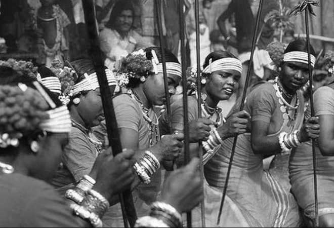

To understand the state of women in India, we must first understand a critical feature of the Indian society: caste. Varna in Sanskrit means “color”, and is the name traditionally used to describe the caste system in India.
It is believed to be have started as a division of society on the basis of occupation, which over time became hereditary and rigid.
Officially there are four castes, the Brahmins, the Kshatriyas, the Vaishyas and the Shudras.
Apart from the 4 casts above, there existed the Untouchable caste who were considered to be outise the caste system, but connected to society. Outside of society it could be argued that there existed a 6th caste of tribal societies who were often considered “other”.
Brahmin
Brahmins (/ˈbrɑːmɪn/; Sanskrit: ब्राह्मण)
specialize as priests, teachers (acharya) and protectors of sacred learning across
generations.
The traditional occupation of Brahmins was
that of priesthood at the Hindu temples or at socio-religious ceremonies and rite of
passage rituals such as solemnizing a
wedding with hymns and prayers.
Theoretically, the Brahmins were the highest ranking of the four social classes. In practice, Indian texts suggest that Brahmins were agriculturalists, warriors, traders and have held a variety of other occupations in India.
Most of the great Sages and Seers who were
instrumental in the creation of the Indian
mythology were from this class.
Kshatriya
(Devanagari: क्षत्रिय; from Sanskrit kṣatra,
"rule, authority").
Traditionally, the kshatriya constituted the ruling and military class. Their role was to protect their interests by fighting in wartime and governing in peacetime.
The administrative machinery in the Rig
Vedic period functioned with a tribal chief
called Rajan whose position was not hereditary. The king was elected in a tribal assembly, which included women, called Samiti. The Rajan protected the tribe and cattle; was assisted by a priest; and did not maintain a standing army, though in the later period the rulership appears to have risen as a class.
Vaishya
Hindu religious texts assigned Vaishyas to
traditional roles in agriculture and cattlerearing,but over time they came to be
landowners, traders and money-lenders. This
made it their responsibility to provide sustenance for those of higher class, since
they were of lower class.
The Vaishyas, along with members of the Brahmin and Kshatriya varnas, claim dvija
status ("twice born", a second or spiritual
birth) after sacrament of initiation as in
Hindu theology.
Historically, Vaishyas have been involved in roles other than their traditional pastoralism, trade and commerce. According to historian Ram Sharan Sharma, the Gupta Empire was a Vaishya dynasty that "may have appeared as a reaction against oppressive rulers".
Shudra
Various sources translate it into English as a caste, or alternatively as a social class. It is the lowest rank of the four varnas.
The word Shudra appears only once in the Rigveda but is found in other Hindu texts such as the Manusmriti, Arthashastra and
Dharmashastras.
Theoretically, Shudras have constituted the
hereditary laboring class serving others but in reality they have shared occupations with other varnas, including being traders and warriors. In some cases, they participated in the coronation of kings, or were ministers and kings according to early Indian texts.
Untouchables
The fifth “caste” were the Untouchables that fell outside of the traditional 4 caste system.
They were often occupied with occupations considered to be unclean, such as sweeping, cleaning, dealing with dead bodies, leather-work, etc.
There are several theories about the origins of untouchability but it has been noted that untouchability is a relatively later development after the establishment of the varna and caste system.
The earliest Vedic text Rigveda makes no mention of untouchability, and even the later Vedic texts, which revile certain groups such as the Chandalas, do not suggest that untouchability existed in the contemporary society.
Tribals
Although considered uncivilised and primitive, adivasis ("indigenous poeples" in Sanskrit) were usually not held to be intrinsically impure by surrounding (usually Dravidian or Aryan) casted Hindu populations, unlike Dalits, who were.
Thus, the adivasi origins of Valmiki, who composed the Ramayana, were acknowledged, as were the origins of adivasi tribes such as the Garasia and Bhilala, which descended from mixed Rajput and Bhil marriages.
The adivasis often enjoyed autonomy and, depending on region, evolved mixed hunter-gatherer and farming economies, controlling their lands as a joint patrimony of the tribe. In some areas, securing adivasi approval and support was considered crucial by local rulers,and larger adivasi groups were able to sustain their own kingdoms in central India.

Angels vs Demons
Gods of the Elite
As the Brahmins and the Kshatriyas often held the power in society, the morals and values of Hindu society were built as per their worldview.
This can be gleaned from Indian mythology through the dichotomy of Devas (Gods) and the Asuras (Demons), along with the Rakshasas.
In the earliest of Indian texts the Vedas, Devas and Asuras were merely celestial beings who fought with each other. However over time, the Devas who were worshipped more by the Vedic elite came to be associated with good and the Asuras with evil.
The Devas were endowed with all the characteristics the were considered morally good while the Asuras were demonized and the Rakshasas became symbols of the “others” who existed outside the Vedic society.
Culture Wars
The Ramayana, the epic story of the travels of Prince Rama of Ayodhya has been interpreted over the years as representative of a cultural clash between the Vedic society of the Aryan peoples who had settled in India and the culture of the indigenous peoples that inhabited the region, represented by the Ravana, Rama’s enemy.
It has been argued that over time, sorties of the victories of Devas over the Asuras were representative of the expansion of the Vedic culture and morals over the existing cultures.
Recently, there have been many works of literature that explore the story of the Ramayana and other mythologies from the perspective of the Asuras and Rakshasas.
There has also been a cultural movement among the Dalits to reappropriate the Asura as a positive identity for the oppressed castes of India.
Goddesses or Demonesses?
The "Ideal" Woman
Due to the fact that the Indian mythologies were created and spread those part of the Vedic cultural system, the characteristics and imagery of the Goddesses they describe are as per their traditional patriarchal norms.
Most goddesses (with a few exceptions) are modest, humble, beautiful, peaceful and most importantly wives to their more powerful male partners. There are few stories where the goddesses themselves play a central role.
At the same time, all the values that were considered to be un-womanlike were attributed to Asura and Rakshasa women such as desire, agency, ambition, pride and violence.
In the stories, these Asura and Rakshasa women are often punished by the glorious heroes for simply exhibiting those traits.
Asuri Power
Women of lower castes in India have to bear the negative consequences of their caste identity on top of all the regular problems that women face all over the world.
Unfortunately these forms of oppression are frequently emotional harassment, violence, sexual harassment, rape and murder; at times simply as a retribution for seeking justice for the crimes committed against them in the first place.
Thus the idea to be explored is to examine the few available stories of Asura and Rakshasa women and to reinterpret them as symbols of oppression faced by the women of lower castes in India.